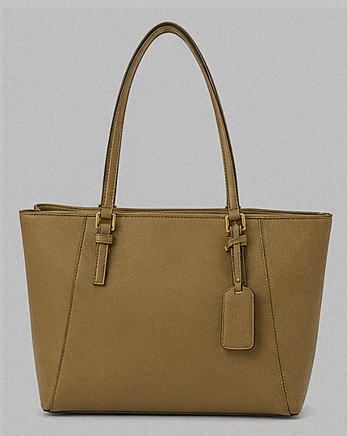

Synthetic demonstration dataset (N=45). These are fixed simulated responses created to demonstrate the full analysis workflow; they are not empirical findings.
Participants45
H1: Specific − Generic
H2: Accountability − None
H3: Difference-in-differences
DV reliability α
Stimulus and instrument preview
Researcher-only access to all experimental materials.
DV by experimental cell
Mean confidence in undisclosed attributes: texture, gloss, shape and stitching. Error bars = 95% CI.
Factorial interaction
Predicted H3 pattern: the specificity effect is stronger when accountability is present.
2 × 2 factorial ANOVA
One omnibus model tests H1, H2 and H3 on the single DV.
| Term | df | F | p | partial η² |
|---|
DV = mean(Texture, Gloss, Shape, Stitching). Colour is measured separately and excluded from the DV, matching the proposal.
Hypothesis readout
H1Pattern supported in synthetic data
Attribute-specific disclosure raises confidence in undisclosed attributes.
H2Pattern supported in synthetic data
Accountability cue raises confidence in undisclosed attributes.
H3Pattern supported in synthetic data
The specificity effect is stronger when accountability is present.
Mechanism: scope inference
Mean of the two 1–7 scope-inference items; process evidence, not a second DV.
Measurement and checks
| DV reliability, α | |
| Scope-inference reliability, α | |
| Disclosure manipulation-check accuracy | |
| Accountability manipulation-check accuracy | |
| Planned contrast: D − A |
Stimulus construction check
Researcher view only: the controlled listing image is brighter, smoother and glossier than the reference product representation.
Reference / “what ships” representation

Participant listing stimulus
Backend / data-capture status
When the included local backend is running, survey submissions are written to SQLite. In file-only mode, the survey downloads a CSV response locally.
Checking local backend…
Start the included RUN_BACKEND_WINDOWS.bat to enable local API collection. The dashboard remains fully viewable without the backend because the fixed 45-participant demonstration dataset is embedded in the package.
Raw synthetic responses
Fixed prototype data used for the charts and statistical snapshot.
| ID | Cell | Texture | Gloss | Shape | Stitching | DV mean | Colour | Scope |
|---|